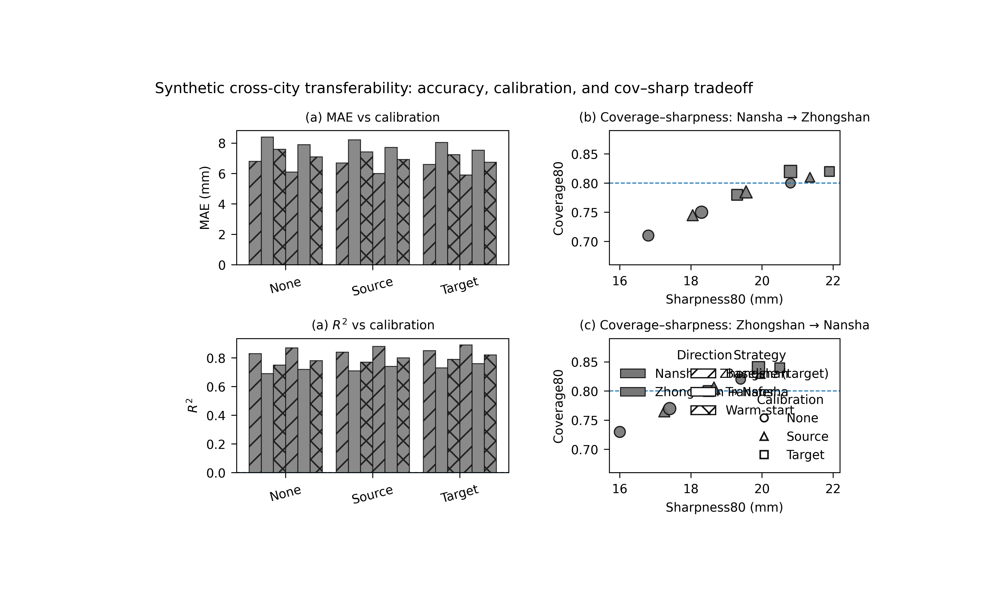

Note
Go to the end to download the full example code.
Cross-city transferability: learning what survives transfer between cities#
This example teaches you how to read the GeoPrior transferability figure.
A model can perform well inside the city where it was trained, but transfer learning asks a harder question:
What happens when we move the workflow from one city to the other, and how do strategy and calibration choices affect the result?
That is exactly what the transferability figure is designed to show.
What the figure shows#
The real plotting backend builds a 2×2 figure:
top-left: one bar panel for a chosen metric,
bottom-left: one bar panel for a second chosen metric,
top-right: coverage–sharpness scatter for Nansha → Zhongshan,
bottom-right: coverage–sharpness scatter for Zhongshan → Nansha.
In the script itself, the default parser settings are:
metric_top = "mae"metric_bottom = "rmse"
However, the file-level description presents the transfer figure
as MAE + R². For a gallery lesson, we will therefore set
metric_bottom="r2" explicitly so the page teaches the more
interpretable transfer story.
Imports#
We use the real rendering backend from the project script.
Step 1 - Build a compact synthetic transfer table#
The real script expects an xfer_results.csv table with
columns such as:
strategy
rescale_mode
direction
source_city
target_city
split
calibration
overall_mae
overall_r2
coverage80
sharpness80
We create one synthetic table with:
baseline rows for self directions A_to_A and B_to_B,
transfer rows for A_to_B and B_to_A,
three calibration modes,
and two transfer strategies: xfer and warm.
The numbers are chosen so the teaching story is clear:
warm transfer is usually better than raw xfer,
target calibration often improves coverage,
and the two transfer directions are not identical.
strategies = ["baseline", "xfer", "warm"]
calib_modes = ["none", "source", "target"]
rows: list[dict[str, float | str]] = []
# Baselines used implicitly by the script for cross-city reference:
# A_to_B baseline -> B_to_B
# B_to_A baseline -> A_to_A
baseline_specs = [
("A_to_A", "nansha", "nansha", 6.1, 0.87, 0.82, 19.4),
("B_to_B", "zhongshan", "zhongshan", 6.8, 0.83, 0.80, 20.8),
]
for direction, src, tgt, mae0, r20, cov0, shp0 in baseline_specs:
for calib in calib_modes:
# Small calibration shifts.
k = {"none": 0.0, "source": 1.0, "target": 2.0}[calib]
rows.append(
{
"strategy": "baseline",
"rescale_mode": "as_is",
"direction": direction,
"source_city": src,
"target_city": tgt,
"split": "val",
"calibration": calib,
"overall_mae": mae0 - 0.10 * k,
"overall_r2": r20 + 0.010 * k,
"coverage80": cov0 + 0.010 * k,
"sharpness80": shp0 + 0.55 * k,
}
)
transfer_specs = [
# direction, source, target, strategy, mae0, r20, cov0, shp0
("A_to_B", "nansha", "zhongshan", "xfer", 8.4, 0.69, 0.71, 16.8),
("A_to_B", "nansha", "zhongshan", "warm", 7.6, 0.75, 0.75, 18.3),
("B_to_A", "zhongshan", "nansha", "xfer", 7.9, 0.72, 0.73, 16.0),
("B_to_A", "zhongshan", "nansha", "warm", 7.1, 0.78, 0.77, 17.4),
]
for direction, src, tgt, strategy, mae0, r20, cov0, shp0 in transfer_specs:
for calib in calib_modes:
k = {"none": 0.0, "source": 1.0, "target": 2.0}[calib]
rows.append(
{
"strategy": strategy,
"rescale_mode": "strict",
"direction": direction,
"source_city": src,
"target_city": tgt,
"split": "val",
"calibration": calib,
"overall_mae": mae0 - 0.18 * k,
"overall_r2": r20 + 0.020 * k,
"coverage80": cov0 + 0.035 * k,
"sharpness80": shp0 + 1.25 * k,
}
)
df0 = pd.DataFrame(rows)
print("Synthetic transfer table")
print(df0.head(12).to_string(index=False))
Synthetic transfer table
strategy rescale_mode direction source_city target_city split calibration overall_mae overall_r2 coverage80 sharpness80
baseline as_is A_to_A nansha nansha val none 6.10 0.87 0.820 19.40
baseline as_is A_to_A nansha nansha val source 6.00 0.88 0.830 19.95
baseline as_is A_to_A nansha nansha val target 5.90 0.89 0.840 20.50
baseline as_is B_to_B zhongshan zhongshan val none 6.80 0.83 0.800 20.80
baseline as_is B_to_B zhongshan zhongshan val source 6.70 0.84 0.810 21.35
baseline as_is B_to_B zhongshan zhongshan val target 6.60 0.85 0.820 21.90
xfer strict A_to_B nansha zhongshan val none 8.40 0.69 0.710 16.80
xfer strict A_to_B nansha zhongshan val source 8.22 0.71 0.745 18.05
xfer strict A_to_B nansha zhongshan val target 8.04 0.73 0.780 19.30
warm strict A_to_B nansha zhongshan val none 7.60 0.75 0.750 18.30
warm strict A_to_B nansha zhongshan val source 7.42 0.77 0.785 19.55
warm strict A_to_B nansha zhongshan val target 7.24 0.79 0.820 20.80
Step 2 - Save and reload it like the real workflow#
The real script reads a CSV and canonicalizes the columns. We follow that path here so the gallery page stays close to the actual command-line behavior.
tmp_dir = Path(
tempfile.mkdtemp(prefix="gp_sg_transfer_")
)
csv_path = tmp_dir / "xfer_results.csv"
df0.to_csv(csv_path, index=False)
df = pd.read_csv(csv_path)
df = _canon_cols(df)
print("")
print("Reloaded rows")
print(len(df))
Reloaded rows
18
Step 3 - Read the transfer story before plotting#
A small numerical summary helps the user understand the visual goal before seeing the final figure.
We summarize the best calibration mode for MAE within each transfer direction and strategy.
best_rows: list[dict[str, str | float]] = []
for direction in ["A_to_B", "B_to_A"]:
for strategy in ["xfer", "warm"]:
sub = df.loc[
df["direction"].eq(direction)
& df["strategy"].eq(strategy)
& df["split"].eq("val")
].copy()
i = int(sub["overall_mae"].idxmin())
best_rows.append(
{
"direction": direction,
"strategy": strategy,
"best_calibration_for_mae": str(
df.loc[i, "calibration"]
),
"best_mae": float(df.loc[i, "overall_mae"]),
"matched_r2": float(df.loc[i, "overall_r2"]),
"matched_coverage80": float(df.loc[i, "coverage80"]),
}
)
best_df = pd.DataFrame(best_rows)
print("")
print("Best calibration by transfer setting")
print(best_df.to_string(index=False))
Best calibration by transfer setting
direction strategy best_calibration_for_mae best_mae matched_r2 matched_coverage80
A_to_B xfer target 8.04 0.73 0.78
A_to_B warm target 7.24 0.79 0.82
B_to_A xfer target 7.54 0.76 0.80
B_to_A warm target 6.74 0.82 0.84
Step 4 - Render the real transfer figure#
The real backend expects a TextFlags object and writes PNG+SVG.
For the gallery lesson, we:
use the actual render(…) function,
choose metric_top=”mae”,
choose metric_bottom=”r2” explicitly,
display the PNG on the page,
and remove the SVG afterward so the example keeps only the PNG artifact in the temporary gallery folder.
out_base = tmp_dir / "transfer_gallery"
png_path, svg_path = render(
df,
split="val",
strategies=["baseline", "xfer", "warm"],
calib_modes=["none", "source", "target"],
rescale_mode="strict",
baseline_rescale="as_is",
reduce="best",
cov_target=0.80,
out=out_base,
text=TextFlags(
show_legend=True,
show_labels=True,
show_ticklabels=True,
show_title=True,
show_panel_titles=True,
title=(
"Synthetic cross-city transferability: "
"accuracy, calibration, and cov–sharp tradeoff"
),
),
metric_top="mae",
metric_bottom="r2",
)
# Keep only the PNG in this gallery example.
if Path(svg_path).exists():
Path(svg_path).unlink()
Step 5 - Show the PNG produced by the backend#
The gallery page displays the actual PNG result produced by the project plotting code.
img = mpimg.imread(str(png_path))
fig, ax = plt.subplots(figsize=(8.8, 5.2))
ax.imshow(img)
ax.axis("off")

(np.float64(-0.5), np.float64(3978.5), np.float64(2454.5), np.float64(-0.5))
Step 6 - Quantify transfer gaps against baseline#
The transfer plot is most informative when compared against the baseline reference used by the script.
For A_to_B, the baseline reference comes from B_to_B. For B_to_A, the baseline reference comes from A_to_A.
We summarize MAE and R² gaps for the best transfer rows.
gap_rows: list[dict[str, str | float]] = []
for direction, baseline_dir in [
("A_to_B", "B_to_B"),
("B_to_A", "A_to_A"),
]:
base = df.loc[
df["direction"].eq(baseline_dir)
& df["strategy"].eq("baseline")
& df["calibration"].eq("target")
].copy()
b_mae = float(base["overall_mae"].iloc[0])
b_r2 = float(base["overall_r2"].iloc[0])
for strategy in ["xfer", "warm"]:
sub = df.loc[
df["direction"].eq(direction)
& df["strategy"].eq(strategy)
].copy()
i = int(sub["overall_mae"].idxmin())
gap_rows.append(
{
"direction": direction,
"strategy": strategy,
"calibration": str(df.loc[i, "calibration"]),
"mae_gap_vs_baseline": float(
df.loc[i, "overall_mae"] - b_mae
),
"r2_gap_vs_baseline": float(
df.loc[i, "overall_r2"] - b_r2
),
}
)
gap_df = pd.DataFrame(gap_rows)
print("")
print("Transfer gaps against target-city baseline")
print(gap_df.round(3).to_string(index=False))
Transfer gaps against target-city baseline
direction strategy calibration mae_gap_vs_baseline r2_gap_vs_baseline
A_to_B xfer target 1.44 -0.12
A_to_B warm target 0.64 -0.06
B_to_A xfer target 1.64 -0.13
B_to_A warm target 0.84 -0.07
Step 7 - Learn how to read the left column#
The left column compares strategies and calibration modes using bar panels.
Top-left panel#
This is the main accuracy metric panel. In this lesson we use MAE, so lower bars are better.
Bottom-left panel#
Here we deliberately use R² instead of the parser default RMSE, because R² is easier to read in a teaching page about transfer:
higher bars are better,
and the gap from baseline is visually intuitive.
The bars are grouped by calibration mode, and the color/hatching scheme separates:
transfer direction,
strategy,
and calibration mode.
Step 8 - Learn how to read the right column#
The right column shows the coverage–sharpness tradeoff, split by transfer direction.
Why this matters:
a transferred model can improve or degrade in two different uncertainty ways:
it can become sharper but under-cover,
or it can regain coverage only by becoming too wide.
Each marker represents one strategy–calibration combination. The dashed horizontal line is the target coverage level.
So the best region is not simply:
the highest point,
or the left-most point,
but rather a sensible compromise:
coverage near the target,
with as little sharpness penalty as possible.
Step 9 - What this synthetic example teaches#
In this lesson we intentionally created three clear patterns:
warm transfer usually improves over raw xfer,
target calibration tends to move coverage closer to 0.80,
the two directions are not symmetric.
That third point is important. Transfer from city A to city B is not automatically the mirror image of transfer from B to A.
This is exactly why the figure keeps separate direction panels.
Step 10 - Practical takeaway#
This figure is one of the most useful comparison pages in the whole gallery because it combines:
transfer accuracy,
transfer calibration,
directionality,
and strategy choice
in a single view.
In practice, it helps answer:
Does warm-start transfer help?
Which calibration mode is safest after transfer?
Is transfer easier in one direction than the other?
How close can transfer get to the target-city baseline?
Command-line version#
The same figure can be produced from the command line.
The real script supports:
--srcor--xfer-csv,--splitwithvalortest,--strategies,--calib-modes,--rescale-modeand--baseline-rescale,--reducewithbest | mean | median,--cov-target,--metric-topand--metric-bottom,plus the shared text flags added through
u.add_plot_text_args(..., default_out="figureS_xfer_transferability").
Legacy dispatcher:
python -m scripts plot-transfer \
--src results/xfer/nansha__zhongshan \
--split val \
--metric-top mae \
--metric-bottom r2 \
--strategies baseline xfer warm \
--calib-modes none source target \
--rescale-mode strict \
--baseline-rescale as_is \
--out figureS_xfer_transferability
Explicit CSV:
python -m scripts plot-transfer \
--xfer-csv results/xfer/nansha__zhongshan/latest/xfer_results.csv \
--split test \
--metric-top mae \
--metric-bottom rmse \
--out figureS_xfer_transferability
Modern CLI:
geoprior plot transfer \
--src results/xfer/nansha__zhongshan \
--split val \
--metric-bottom r2 \
--out figureS_xfer_transferability
The gallery page teaches the figure. The command line reproduces it in a workflow.
Total running time of the script: (0 minutes 9.682 seconds)